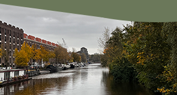
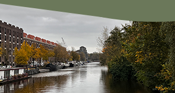

Waarom groen
Amsterdam is een stad en bij een stad moet sowieso meer groen daarom zijn er stichtingen die proberen de stad zo groen mogelijk te houden.

Amsterdam is een stad en bij een stad moet sowieso meer groen daarom zijn er stichtingen die proberen de stad zo groen mogelijk te houden.
Een groenere stad betekent dat het beter is voor het milieu en het ziet er natuurlijk ook mooier uit dan een paar grijze gebouwen.